Can a small, cheap model make routine support decisions, and is its confidence honest?
Only the two offline contenders have run so far: keyword rules and an even-odds floor. The model runs happen on the owner's Mac.
250 made-up support requests to a fictional software company (Quillstack), labelled by written rules before any model saw them. Three questions each: urgent? (yes or no), which team (8 options), how frustrated (1 to 5). Hard cases on purpose: two problems in one message, sarcasm, very short messages, non-native English. 200 for development, 50 held out and scored once at the end.

| Contender | Urgent | Team | Frustration off by | Median s | Calibration error urgent / team / frust. | Machine | Cost per 1,000 |
|---|---|---|---|---|---|---|---|
| rules | 0.82 | 0.73 | 0.90 | 0.0001 | 0.04 / 0.34 / 0.34 | Claude cloud container (Linux x86_64) | 0, runs locally |
| uniform | 0.26 | 0.13 | 1.29 | 0.0000 | 0.24 / 0.01 / 0.24 | Claude cloud container (Linux x86_64) | 0, runs locally |
Highlighted: best real contender in each column (the even-odds floor is shown for scale only). Frustration off by: average distance from the right level. Calibration error: the average gap between how sure a contender said it was and how often it was right; 0 is perfect. The rules were written while looking at this set, so their numbers here are optimistic.
Each dot is a group of answers with similar stated confidence. On the dashed line, a contender that says 80% is right 80% of the time. Above the line: more modest than it needs to be. Below: overconfident.
| Contender | billing | account-access | technical-support | integrations-api | security-privacy | sales | how-to | feedback |
|---|---|---|---|---|---|---|---|---|
| rules | 22/26 | 20/23 | 20/30 | 19/23 | 15/26 | 12/23 | 21/24 | 17/25 |
| uniform | 26/26 | 0/23 | 0/30 | 0/23 | 0/26 | 0/23 | 0/24 | 0/25 |

pending
The threshold is fixed from real model runs on the development set, which happen on the owner's Mac. The rule is already written down: the lowest threshold where urgent and team accuracy are both within 0.02 of the slow model alone.
- One author wrote and labelled every request in one sitting; a real queue is messier.
- Only 9 requests are at frustration level 5.
- Speeds depend on the machine named next to each number.
- Jev is tested only if a key is supplied; nothing here claims to know how it works inside.
- Every number comes from runs in this repo.